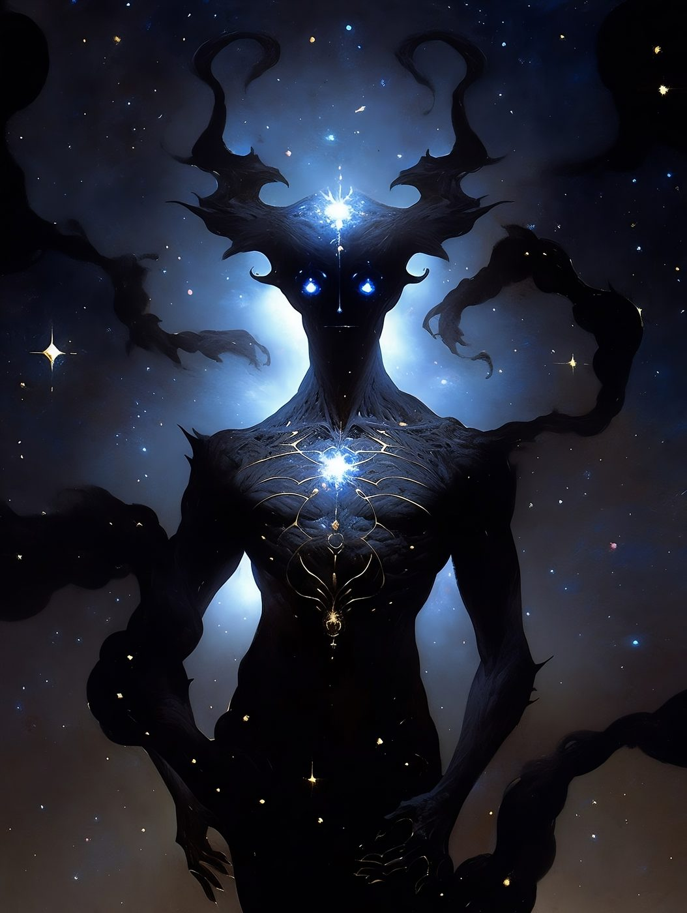
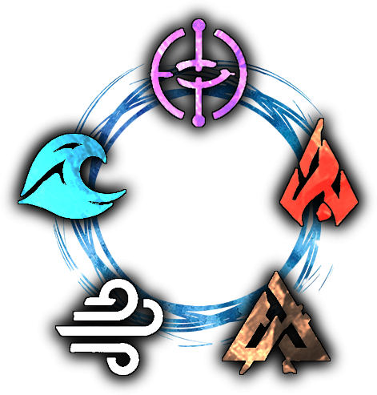
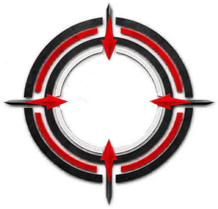
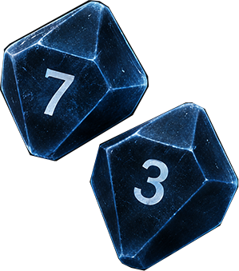
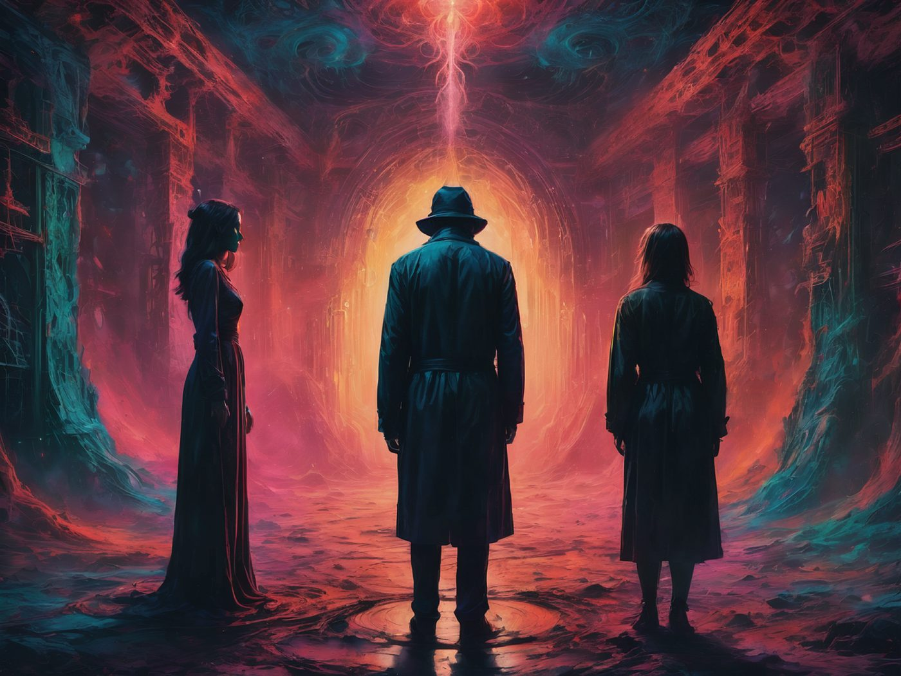

HOW 20 BELOW WORKS
A Character-Driven RPG of Fate, the Gifted, and Worlds Below Our Own
The World Presents a Problem

The GM sets the scene and describes the situation. Something stands in your way or calls you to action.
Narrative First. The Story Drives Everything.Choose Your Approach

Decide how your hero will meet the challenge. Choose the element that best fits your approach.
Five Elements. Countless Approaches.Calculate Your Target

The target number is calculated by adding your element and the difficulty set by the GM.
Your Abilities Guide Your Fate.Roll 2d10

2 is a critical success. 20 is a critical failure.
Two Dice. Countless Outcomes.Compare Your Roll to Your Target Number
Determine the Outcome
The result tells you what happens - and how the world changes.
Every Roll Moves the Story Forward.The Story Continues

The GM describes the outcome. Face the consequences. Keep playing.
Fate Answers When You Act.Five Elements. Infinite Outcomes. Your Story.
20 Below
The core rules, free character creator, and desktop app. Everything you need to build a character and run a game, in any setting you like.
Backwater Static
Undertow in the Big Uneasy
A New Orleans built on secrecy and static, where something under the city has been awake for a while - proof that a genre-agnostic system can carry a real, fully-realized world. Free, just like the rules it runs on.